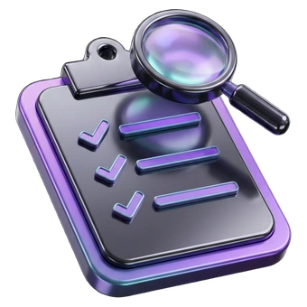
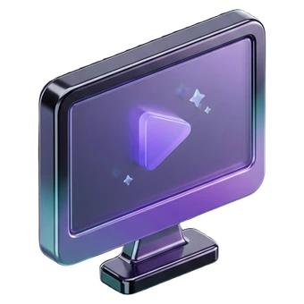
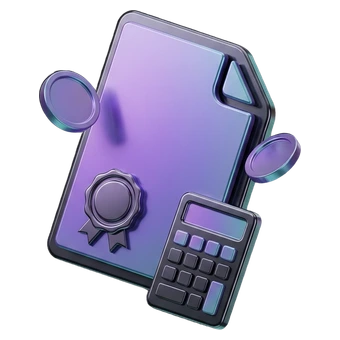
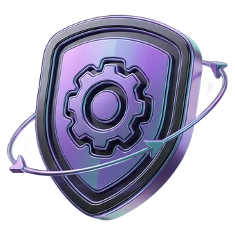

Bu sayfa resmî Estezone Medikal sitesi değildir. TasarımMania tarafından hazırlanmış,
onaylanmamış bir tasarım önerisidir. Gerçek site:
estezone.com.tr
Estezone Medikal; hastane, klinik ve medikal estetik merkezlerine epilasyon, cilt ve
vücut şekillendirme platformları tedarik eder. Cihazı satıp çekilmez — kendi
teknik servis atölyesinde ayakta tutar.
Estetik cihaz yatırımının gerçek maliyeti satın alma bedeli değil, duran gün sayısıdır.
Bu yüzden işimizin merkezinde servis var.
Kendi teknik servis atölyemiz
Cihazı satıp çekilen değil, arızasını kendi atölyesinde onaran tedarikçiyiz. Pompa haznesinden fiber optiğe kadar müdahale bizde biter.
Platform bağımsız yedek parça
Bizden almadığınız cihazlar için de parça tedarik ederiz. Sahada yıllardır duran bir sistem, doğru parçayla yeniden gelir kazandırır.
Tek yetkili distribütörlükler
Arion Alexandrite gibi platformlarda Türkiye tek yetkili distribütörüyüz. Parça ve teknik destek doğrudan üreticiden gelir.
Belgeli teknoloji
Portföyümüzde FDA 510(k) ve CE sınıflandırması belgeli platformlar yer alır. Belge numarası sorulduğunda gösterilir.
İki şehirden yerinde destek
Ankara Beysukent’te showroom ve servis atölyesi, İstanbul Ataşehir’de bölge ofisi. Demo randevusu ve yerinde keşif iki şehirden de planlanır.
Esnek edinim seçenekleri
Her yatırım peşin satın alma olmak zorunda değil: kiralama, takas ve atölyemizden geçen kontrollü ikinci el seçenekleri birlikte fiyatlanır.
Satın alma süreci
Beş adımda net bir yol
Yüksek bedelli bir yatırımda sürpriz olmamalı. Her adımda ne olacağını baştan biliyorsunuz.

01
İhtiyaç Analizi
İşletme tipiniz, hedef hasta profiliniz, mevcut cihaz envanteriniz ve günlük seans hacminiz konuşulur. Doğru cihaz, en pahalı cihaz değildir.

02
Demo ve Uygulama
Cihazı showroom’da veya kendi merkezinizde görürsünüz. Uygulamayı operatörünüz yapar; sonucu kendi hastanızda değerlendirirsiniz.

03
Teklif ve Finansman
Cihaz, sarf, eğitim ve garanti tek teklifte netleşir. Peşin, taksit ve kiralama seçenekleri ayrı ayrı hesaplanır.
04
Kurulum ve Eğitim
Elektrik ve topraklama kontrolüyle kurulum yapılır. Operatör eğitimi, protokol kartları ve güvenlik brifingi teslim edilir.

05
Servis ve Süreklilik
Periyodik bakım takvimi kurulur. Arıza halinde kendi atölyemiz devreye girer; yedek parça stoktan çıkar.
Sahadan
Hangi işletme, hangi hatta başladı
Kurumsal iş referanslarımız — hasta görseli ya da tedavi sonucu değil, işletmenin
yatırım yolculuğu. Rakamlar temsilîdir; teklif aşamasında gerçek referanslarımızı paylaşırız.
20+yıllık tedarik geçmişi
4ana cihaz hattı
2ofis · Ankara & İstanbul
8kalemde atölye onarımı
Güzellik salonuAnkara
Tek kabinli salonda ikinci gelir hattı
Cilt bakımı ağırlıklı çalışan salon, epilasyon talebini dışarıya yönlendirmeyi bırakmak istedi. Giriş seviyesi diode platformla başlanıp altı ay sonra ikinci başlık eklendi.
Lazer epilasyonKiralamayla başlayıp satın almaya geçti
Medikal estetik merkeziİstanbul
Sezon yoğunluğunda ek kapasite
Yaz döneminde randevu sırası uzayan merkez, üç aylık kiralama ile ikinci kontur platformu aldı. Sezon sonunda cihaz teslim edildi, ertesi yıl aynı model satın alındı.
Vücut şekillendirmeSezonluk kiralama → kalıcı yatırım
PoliklinikAnkara
Farklı marka cihaza atölye desteği
Bizden alınmamış bir CO2 platformunun güç kaynağı arızasında ölçümlü teşhis yapıldı; onarımın yenilemeden ekonomik olduğu yazılı raporlandı ve cihaz sahaya döndü.
Cilt & medikal estetikMarka bağımsız teknik servis
60 saniyede teklif
Üç soru, hazır teklif mesajı
Formu doldurmayın; üç seçim yapın, mesajınızı biz yazalım. WhatsApp'ta göndermeye hazır gelsin.
01
Hangi hatta yatırım düşünüyorsunuz?
02
İşletme türünüz nedir?
Bu bilgi, cihazın bulundurma yetkisini önden değerlendirmemiz için gerekli.
+90 312 466 66 86
Ankara ve İstanbul ofislerimizden aynı gün dönüş yapılır.
Cihaz fiyatlarını neden sitede yayınlamıyorsunuz?
Bir cihazın gerçek maliyeti; başlık konfigürasyonu, sarf paketi, eğitim, garanti süresi ve kurulum koşullarına göre değişir. Aynı cihaz iki işletmeye farklı paketle çıkar. Bu yüzden fiyatı listelemek yerine, envanterinize göre net bir teklif hazırlıyoruz.
Cihazı satın almadan deneyebilir miyim?
Evet. Ankara showroom’umuzda cihazı görebilir, uygun platformlarda kendi merkezinizde demo talep edebilirsiniz. Uygulamayı sizin operatörünüzün yapması, cihazın günlük iş akışınıza uyup uymadığını en net gösteren yöntemdir.
Kiralama veya ikinci el seçeneğiniz var mı?
Sezonluk yoğunluk ya da yeni şube açılışı gibi durumlar için kiralama, bütçe kısıtı olan işletmeler için kontrollü ikinci el seçenekleri değerlendirilebilir. İkinci el cihazlar atölyemizden geçmeden teslim edilmez.
Başka markadan aldığım cihaza servis veriyor musunuz?
Veriyoruz. Teknik servisimiz platform bağımsız çalışır; flash lamba, optik, fiber, güç kaynağı ve soğutma sistemi müdahalelerini farklı markalarda da yapıyoruz. Cihazın marka ve model bilgisiyle bize ulaşmanız yeterli.
Kurulum ve operatör eğitimi dahil mi?
Kurulum ve operatör eğitimi teklif kapsamında ayrı kalem olarak gösterilir. Eğitimde cihaz kullanımının yanında güvenlik, cilt tipine göre parametre seçimi ve seans planlaması da anlatılır.
Arıza durumunda ne kadar sürede müdahale ediliyor?
Müdahale süresi cihazın bulunduğu şehre, arızanın tipine ve parçanın stok durumuna göre değişir. Uzaktan teşhisle çözülebilen sorunlarda aynı gün, atölyeye gelmesi gereken arızalarda parça temin süresine bağlı olarak planlama yapılır.